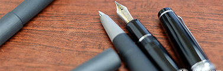

 You make millions of decisions that is
mean nothing,and then one day your
order takes out life.It's sad when you realize you aren't
is as important to someone as you
thought you were.Love is unequal, so don't count how
much one contributes, and which is
more active.新品推荐L A M YCUTE usefulGOOD SIMPLE